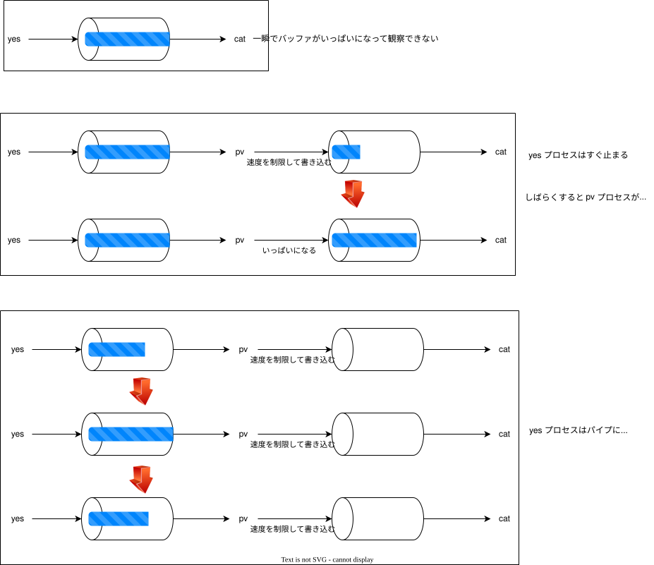

KDOC 278: パイプの詰まりを再現する
この文書のステータス
- 作成
- 2024-11-09 貴島
- レビュー
- 2024-11-14 貴島
再現する
パイプにはバッファサイズがあり、いっぱいになると処理をブロックする。これを確かめる。
yes | pv -L 10000 | cat /dev/random > /dev/null
9.77KiB 0:00:01 [9.02KiB/s] 19.5KiB 0:00:02 [9.84KiB/s] 29.3KiB 0:00:03 [9.84KiB/s] 39.1KiB 0:00:04 [9.84KiB/s] 48.8KiB 0:00:05 [9.84KiB/s] 56.6KiB 0:00:06 [7.87KiB/s] 56.6KiB 0:00:07 [0.00 B/s] # 👈 速度0 56.6KiB 0:00:08 [0.00 B/s] 56.6KiB 0:00:09 [0.00 B/s] 56.6KiB 0:00:10 [0.00 B/s]
また、straceをyesプロセスに使うとパイプのバッファに空きができ次第、書き込んでいる様子が確認できる。
strace yes | pv -L 10000 | cat /dev/random > /dev/null
- yesプロセスとつながっているパイプは最初に一瞬でいっぱいになる。yesの書き込み速度は非常に早い
- pvが動き出してyesプロセスとつながっているパイプのバッファを読み出し空きができると、都度yesプロセスが実行開始、またパイプに追加される
- catコマンド側のパイプがいっぱいになると、pvもバッファを書き込めなくなるため停止する。結果、yesプロセスとpvプロセスがどちらもつながっているパイプの空き待ちのSleepになる
write(1, "y\ny\ny\ny\ny\ny\ny\ny\ny\ny\ny\ny\ny\ny\ny\ny\n"..., 8192) = 8192 (略...) write(1, "y\ny\ny\ny\ny\ny\ny\ny\ny\ny\ny\ny\ny\ny\ny\ny\n"..., 8192) = 8192 write(1, "y\ny\ny\ny\ny\ny\ny\ny\ny\ny\ny\ny\ny\ny\ny\ny\n"..., 8192) = 8192 write(1, "y\ny\ny\ny\ny\ny\ny\ny\ny\ny\ny\ny\ny\ny\ny\ny\n"..., 8192 9.77KiB 0:00:01 [8.99KiB/s] write(1, "y\ny\ny\ny\ny\ny\ny\ny\ny\ny\ny\ny\ny\ny\ny\ny\n"..., 8192 19.5KiB 0:00:02 [9.84KiB/s] write(1, "y\ny\ny\ny\ny\ny\ny\ny\ny\ny\ny\ny\ny\ny\ny\ny\n"..., 8192 29.3KiB 0:00:03 [9.84KiB/s] write(1, "y\ny\ny\ny\ny\ny\ny\ny\ny\ny\ny\ny\ny\ny\ny\ny\n"..., 8192 39.1KiB 0:00:04 [9.84KiB/s] write(1, "y\ny\ny\ny\ny\ny\ny\ny\ny\ny\ny\ny\ny\ny\ny\ny\n"..., 8192) = 8192 write(1, "y\ny\ny\ny\ny\ny\ny\ny\ny\ny\ny\ny\ny\ny\ny\ny\n"..., 8192 48.8KiB 0:00:05 [9.84KiB/s] write(1, "y\ny\ny\ny\ny\ny\ny\ny\ny\ny\ny\ny\ny\ny\ny\ny\n"..., 8192 56.6KiB 0:00:06 [7.87KiB/s] 56.6KiB 0:00:10 [0.00 B/s] # 👈 速度0

メモ
- strace は発行システムコールを表示するコマンド
- pv はパイプのデータの流れを確認するコマンド。-Lで書き込み速度を制限できる。pvを使って制限しないと一瞬で終わってしまうため観察できない
- cat /dev/random > /dev/null は何もせず待ち受けるためのコマンド。要件:
- 実行し続ける
- パイプのバッファを消費しない
- パイプを閉じない
- 出力を一切しない
関連
- KDOC 109: 発行システムコールを調べる。straceで詳細に調べる方法
- KDOC 254: ジョブプロセスがSleepしていた理由。調べたきっかけとなる事象